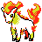

#077
Ponyta
Fire
Abilities: Flame Body, Flash Fire, Reckless
Base stats BST 410
HP50
Attack85
Defense55
Speed90
Sp. Atk65
Sp. Def65
Evolution
dbbw EVOLVE_LEVEL, 40, RAPIDASHLevel-up learnset
LevelMoveType
Lv. 1GrowlNormal
Lv. 1TackleNormal
Lv. 1Tail WhipNormal
Lv. 7EmberFire
Lv. 10StompNormal
Lv. 13Double KickFighting
Lv. 15Flame ChargeFire
Lv. 16Flame WheelFire
Lv. 19Take DownNormal
Lv. 22Fire SpinFire
Lv. 25AgilityPsychic
Lv. 28HypnosisPsychic
Lv. 31Low KickFighting
Lv. 34Flare BlitzFire
Lv. 37Double-EdgeNormal
Lv. 46Fire BlastFire